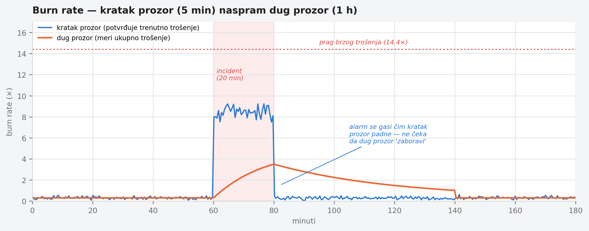

Poglavlje 15 — SLO i alarmi zasnovani na budžetu grešaka
Merač goriva u automobilu ne razlikuje dva potpuno različita scenarija koji oba izgledaju isto na tabli: gorivo koje curi kroz veliku rupu u rezervoaru i prazni ceo tank za sat vremena, i gorivo koje se troši normalnom, sporom brzinom i potraje nedelju dana. Oba scenarija u nekom trenutku pale isto "malo goriva" svetlo. Ali hitnost reakcije je potpuno različita — jedno je razlog da se odmah stane pored puta, drugo je razlog da se sutra svrati do pumpe. Merač koji samo gleda trenutni nivo ne može tu razliku da vidi; razliku vidi samo onaj ko posmatra brzinu kojom nivo pada.
15.1 Pitanje na koje ovo poglavlje odgovara
Prag zasnovan na trenutnoj vrednosti ("stopa grešaka je iznad 1%") ne razlikuje naglo, ozbiljno pogoršanje od blagog, hroničnog curenja koje bi za mesec dana potrošilo isti budžet grešaka. Ovo poglavlje odgovara na pitanje kako se gradi alarm koji razlikuje ta dva scenarija — i, kroz stvarnu studiju slučaja, pokazuje šta se dešava kad ulazni signal za taj alarm sam po sebi nije ono što tvrdi da jeste.
15.2 Kako je to urađeno — praktičan pregled
Multi-window burn-rate alarmi — osnovna mehanika
SLO (service-level objective) definiše koliki procenat zahteva sme da "promaši" u definisanom periodu, a da usluga i dalje broji kao "dovoljno dobra" — recimo, 99.9% dostupnosti mesečno znači budžet od 0.1% neuspešnih zahteva. Burn rate je brzina kojom se taj budžet troši u odnosu na normalnu, održivu brzinu: burn rate 1× znači "trošimo budžet tačno onom brzinom koja bi ga potrošila do kraja perioda, ni brže ni sporije"; burn rate 10× znači "trošimo ga deset puta brže — na ovoj brzini, budžet bi nestao za desetinu perioda".
Implementacija koju knjiga prati koristi tri nivoa burn-rate alarma, svaki sa dva vremenska prozora istovremeno — dug prozor koji meri da li je budžet zaista značajno potrošen, i kratak prozor koji potvrđuje da se trošenje trenutno dešava, ne da se dogodilo pa prestalo:
- Brzo trošenje (page, hitno): dug prozor 1 sat, kratak prozor 5 minuta, burn rate 14.4× — ozbiljan, tekući problem koji zaslužuje trenutnu pažnju.
- Srednje trošenje (page): dug prozor 6 sati, kratak prozor 30 minuta, burn rate 6×.
- Sporo trošenje (tiket, ne hitno): dug prozor 3 dana, kratak prozor 6 sati, burn rate 1× — hronično curenje koje zaslužuje pažnju, ali ne budi nikoga usred noći.
Dva prozora rade zajedno namerno: sam dugi prozor bi, kad se problem reši, nastavio da pokazuje povišen burn rate satima posle stvarnog oporavka (jer prozor od 6 sati "pamti" grešku iz prethodnog sata), izazivajući alarm koji kasni u gašenju baš koliko i u paljenju. Kratak prozor rešava to — alarm se gasi čim kratak prozor pokaže da trošenje budžeta više nije aktivno, čak i dok dugi prozor još uvek "pamti" ranije trošenje.
Studija slučaja: kad SLI sam po sebi laže
Ovi alarmi su, u implementaciji koju knjiga prati, počeli da se okidaju ponavljano — srednji i spor nivo, više puta u toku dana. Prva pretpostavka bi bila da servis zaista degradira. Servis je bio potpuno zdrav. Autoritativan signal (broj stvarnih neuspešnih odgovora izmeren na nivou load balancer-a, van same aplikacije) pokazivao je svega sedam neuspešnih zahteva za dvadeset četiri sata — praktično 100% dostupnost. Sam SLI (signal na kome je alarm zasnovan), izveden iz histograma unutar aplikacije, tvrdio je nešto sasvim drugo: preko milion "neuspešnih" zahteva na jednom endpoint-u, i preko šesnaest miliona ukupnih zahteva na taj isti endpoint u istom periodu — brzina saobraćaja koja je fizički nemoguća za taj broj instanci.
Uzrok: servis se horizontalno auto-skalira, dodaje i uklanja instance tokom dana zbog rasporeda saobraćaja. Svaka instanca nosi sopstveni identifikator u svojoj seriji histograma. Upit koji sabira "porast" preko vremenskog prozora, primenjen preko svih serija odjednom, ekstrapolira svaku pojedinačnu seriju do ivica prozora — a kad desetine kratkotrajnih instanci nastaju i nestaju tokom dana, taj zbir ekstrapolacija masivno precenjuje stvaran broj. Potpis greške je bio nedvosmislen u samim podacima: broj grešaka po intervalu od pola sata je bio identičan, do poslednje cifre, dvanaest uzastopnih intervala zaredom — stvaran saobraćaj nikad ne proizvodi identičan broj dvanaest puta zaredom; to je artefakt ekstrapolacije, ne merenje.
Kako je reagovano — disciplina, ne refleks
Prva reakcija nije bila spustiti prag alarma da prestane da se oglašava — to bi sakrilo simptom bez razumevanja uzroka i ostavilo pokvaren signal da dalje živi neotkriven. Umesto toga: pravilo je pauzirano eksplicitno (ostaje vidljivo u konfiguraciji kao pauzirano, ne obrisano, i ne neprimećeno tiho), stvaran broj grešaka je potvrđen protiv nezavisnog, autoritativnog izvora (load balancer, ne sopstveni histogram aplikacije), i tek onda je odlučeno kako dalje: SLI treba ponovo izgraditi na signalu koji je otporan na promenljivost broja instanci — bilo korišćenjem istog autoritativnog spoljašnjeg brojača kao izvora, bilo agregiranjem histograma po stabilnoj labeli pre računanja umesto po nestabilnom identifikatoru instance.
Ovako izgleda mehanika dva prozora zajedno tokom kratkotrajnog incidenta — kratak prozor skače odmah i pada odmah, dug prozor raste sporije i polako se "vraća", što je razlog zašto se alarm gasi brzo posle stvarnog oporavka umesto da satima kasni:

15.3 Analitički deo — zašto multi-window nije proizvoljna komplikacija
Zvanična preporuka: zašto jedan prag nikad nije dovoljan
Zvanična SRE praksa eksplicitno objašnjava zašto jednostavan prag na jednom prozoru ne može istovremeno postići dobru preciznost, dobar recall, brzo otkrivanje i brzo gašenje alarma. Prozor od jednog sata otkriva ozbiljan ispad brzo, ali nastavlja da se oglašava sat vremena posle stvarnog oporavka — što zbunjuje i troši poverenje u alarm. Rešenje nije jedan "pravi" prozor, nego par prozora po nivou hitnosti, sa kratkim prozorom čija je preporučena dužina otprilike jedna dvanaestina dugog — dovoljno kratak da potvrdi da je trošenje budžeta trenutno aktivno, dovoljno dugačak da ne reaguje na šum od par sekundi.
Implementacija prati recept, sa jednim specifičnim dodatkom
Tri nivoa (brzo/srednje/sporo) i njihovi pragovi prate zvaničan obrazac gotovo bukvalno — ovo je, slično Poglavlju 10, slučaj gde nema potrebe za izmišljenom pričom o odstupanju. Ono što recept retko eksplicitno pokriva je pitanje pouzdanosti samog SLI-ja — recept pretpostavlja da je brojanje uspeh/neuspeh signala pouzdano, i fokusira se na to kako reagovati na promenu tog broja. Implementacija koju knjiga prati je, kroz sopstveno iskustvo, dodala korak koji recept ne razrađuje: pre nego što se veruje ijednom pragu, proveri da li apsolutne brojke iza odnosa uopšte imaju smisla — šesnaest miliona zahteva na jedan endpoint za dan je brojka koju bi bilo ko sa poznavanjem kapaciteta sistema prepoznao kao nemoguću, da je neko pogledao pre nego što je poverovao izvedenom procentu.
Cena da je prva reakcija bila spuštanje praga: kontrafaktički scenario
Vredi konkretno odigrati alternativu. Da je tim, umesto pauziranja pravila i istrage uzroka, jednostavno podigao prag da alarm prestane da se oglašava (recimo, udvostručio granicu burn rate-a), rezultat bi izgledao kao rešen problem — kanal bi utihnuo. Ali stvaran, pokvaren SLI bi ostao netaknut, i sistem bi izgubio sposobnost da otkrije pravu degradaciju istog servisa, jer bi prag sada bio podešen da toleriše lažni šum umesto da meri stvarno stanje. Ovo je isti obrazac viđen već u Poglavlju 6 kod redukcije kardinalnosti primenjene na pogrešno mesto: mera koja izgleda kao rešenje, a zapravo uklanja sposobnost da se problem uopšte primeti kad se sledeći put zaista dogodi.
Vratimo se na merač goriva s početka poglavlja. Svetlo "malo goriva" samo po sebi ne govori ništa o hitnosti — potrebno je znati brzinu pada da bi se znalo da li stati odmah ili sutra svratiti do pumpe. Ali čak i najbolji merač brzine pada je beskoristan ako je sam senzor nivoa goriva neispravan i javlja nemoguće brojke. Burn-rate alarm rešava pitanje hitnosti — ali rešava ga tek pošto je neko proverio da signal koji se meri zaista meri ono što tvrdi da meri.
15.4 Skupljena pravila iz ovog poglavlja
- Koristi multi-window burn-rate alarme umesto jednog praga na jednom prozoru — par dugog i kratkog prozora rešava i brzo otkrivanje i brzo gašenje, što nijedan pojedinačan prozor ne može sam.
- Postavi kratak prozor na otprilike jednu dvanaestinu dugog — dovoljno kratak da potvrdi trenutno trošenje budžeta, dovoljno dugačak da ne reaguje na šum.
- Pre nego što poveruješ izvedenom procentu ili odnosu, proveri apsolutne brojke iza njega protiv nezavisnog, autoritativnog izvora — odnos može izgledati verovatno dok su oba njegova člana besmislena.
- Kad alarm počne da se oglašava neočekivano često, prva reakcija nije spuštanje osetljivosti — prva reakcija je provera da li signal na kome je alarm zasnovan zaista meri ono što tvrdi da meri.
- Izbegavaj rate/increase upite preko labela sa visokim obrtom (identifikator instance koja se stalno menja) u SLI-ju — agregiraj ih na stabilnu labelu pre računanja ili koristi recording rule otporan na taj obrt.
15.5 Vežba za čitaoca
Pronađi SLO alarm u svom sistemu i proveri: da li ima samo jedan prozor, ili par (dug + kratak)? Zatim uzmi apsolutne brojke iza njegovog trenutnog odnosa (brojilac i imenilac, ne sam procenat) i uporedi ih sa nezavisnim izvorom ako postoji. Da li se slažu? Ako nemaš nezavisan izvor za poređenje — to je praznina koju ovo poglavlje traži da primetiš pre nego što ti alarm jednog dana kaže nešto što nije istina.